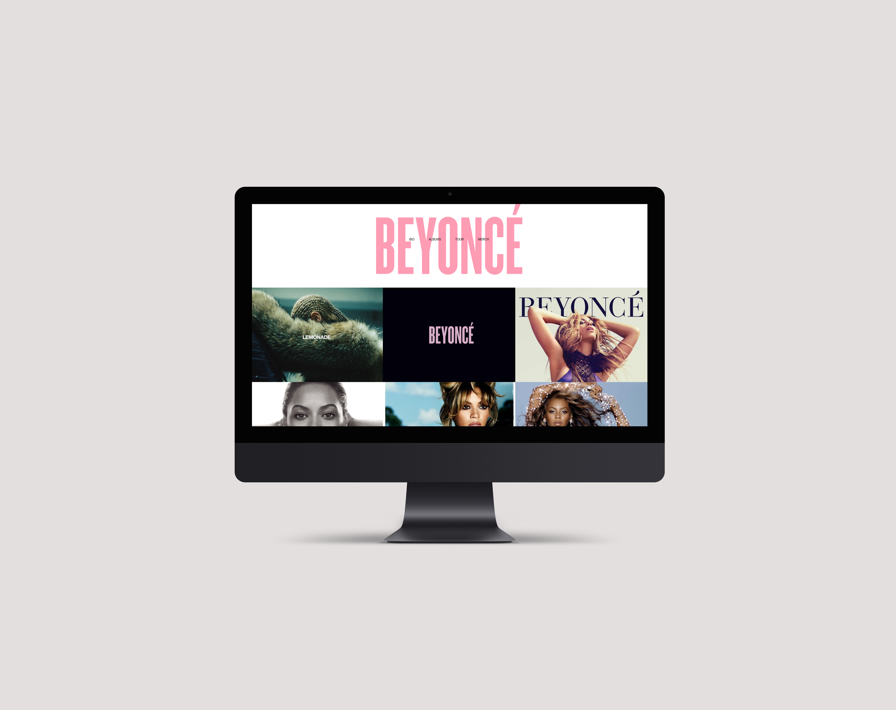
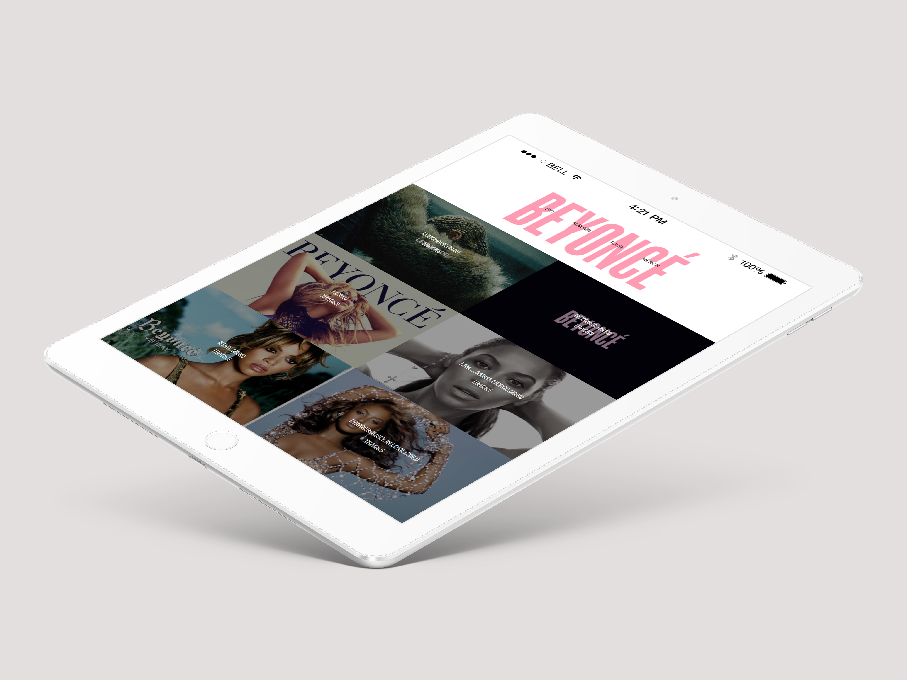
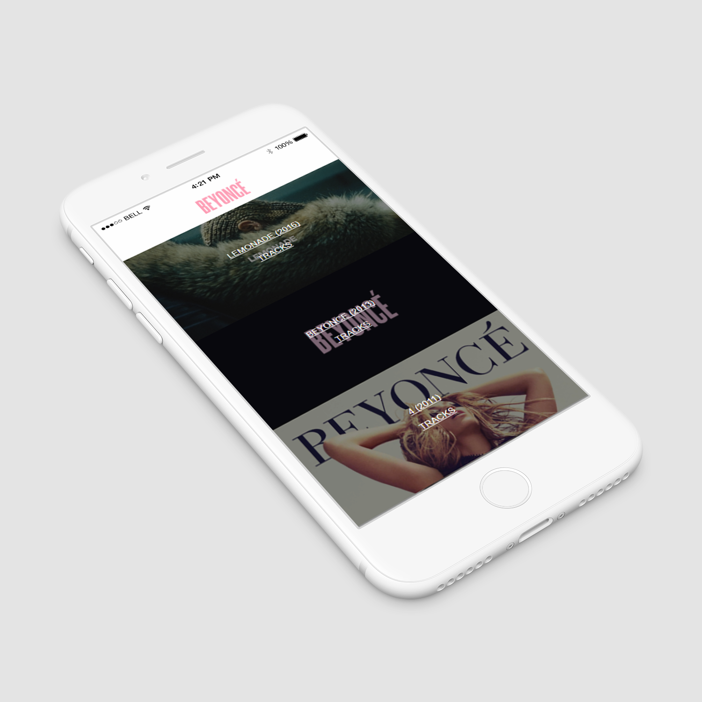

BEYONCE Website

Responsive Web Design
The goal of this project was to learn how to create responsive webpages. This is important when creating websites to ensure that the user has an optimal view on any device. For my design, I started off with a three column layout at desktop view. As the device gets smaller, the columns also reduce in order to ensure that the user can view the same information.
This was part of an introduction to web design course only using HTML5 and CSS3. I used tools such as flexbox, media queries, and animations.
  